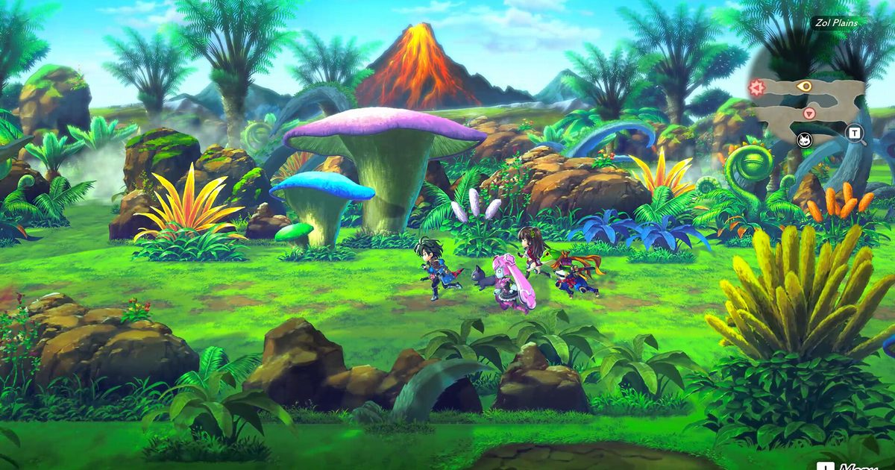

2026-09-17 · 单机深读
9 月 17 日，WFS 把《Another Eden: Begins》推上了 Switch、Switch 2 和 Steam。但对老玩家来说，这名字背后是 2017 年那款被抽卡框架困住的《另一个伊甸：跨越时空的猫》——一款由加藤正人（Chrono Trigger / Xenogears 剧本）与光田康典操刀、却始终没机会把故事讲完的手游。今天上架的"Begins"，干了一件很干脆的事：把抽卡拆了，换成一次性买断。

2017 年的《另一个伊甸》手游，当年靠着"加藤正人写剧本 + 光田康典写音乐"的金字招牌，在抽卡 JRPG 红海里算出挑的那个。但它终究跑不脱手游的宿命：角色要靠卡池抽，叙事被活动切碎，想看完整主线得跟着半年一次的复刻节奏熬。九年过去，市场早被更狠的抽卡卷烂，当年那批"想好好讲个穿越故事"的玩家，大多已经散了。
所以《Begins》最聪明的动作，不是"移植"，而是"重做"：WFS 把加藤正人加核心班底单独拉出来成立 Studio Prisma，从零重建视觉与地图探索，做成一款买断单机——一次性付费、无抽卡内购、主线全语音、自带简繁中文，还塞进 New Game+ 与 10 个以上结局。更妙的是它先放了个免费试玩版：前六章随便玩，进度直接继承到正式版。等于把"要不要花这 128 块"的赌，变成了"先玩六章再说"的零成本试用。
① 抽卡化 → 买断化，是这一次最本质的分家。 原手游靠随机抽拿角色；Begins 基础版直接把 18 名伙伴（主角 Aldo + 17 名跨越各时代的同伴）一次给齐。想要更多角色？走"一次性角色包 / 季票"——单包 1000 日元、季票 4500 日元，明码标价。这是把"赌概率"换成"标价买"，对只想看剧情的玩家是降维解放。
② 时空穿越，是加藤正人的招牌 DNA。 Aldo 的妹妹 Feinne 被兽王掳走，他追入月光森林，被时空裂隙甩到 800 年后的未来；过去（远古）、现在（中世纪奇幻）、未来（科幻都市）三段式穿梭。这套"时代跳跃"的结构和《时空之轮》是同一个基因，光田康典写主题曲、Procyon Studio 用民乐编排织氛围——光听这阵容，老 JRPG 粉的DNA 就会动。
③ Another Force 机制，是命令制里的爽点开关。 攻击攒满"异力"条后触发时停，全队在敌人动不了的几秒里倾泻连段；Chain Skills 再把元素与物理属性串成连锁爆发。它不算革命性创新，但在传统回合制里给了你一个"攒满就爽"的节拍器，耐玩度比纯站桩高一大截。
④ New Game+ 与 10+ 结局，是质量信号也是疑问。 通关后保留等级装备，神秘少女 Ramiu 开启分支，选择导向 10 个以上结局。愿意为 replayability 砸内容，是诚意；但它也悄悄暗示——本体可能是"精致而偏短"，真正的厚度藏在二周目之后。
和《时空之轮》的血缘。 加藤正人亲自写，Begins 不是 CT 重制，而是"CT 精神的新作"。想找 CT 代餐的人会在这里闻到熟悉的家味；但别期待 CT 那种战斗手感——它只是叙事血缘相近，系统是两码事。
和 Octopath / Triangle Strategy 等买断 JRPG。 同一条赛道，但 Begins 背着"手游改"的原罪。老玩家最怕的就是"还是那套手游味"。Studio Prisma 从零重建视觉与探索，正是冲着这个偏见去的——它想证明自己不是移植，是重生。
和原手游版。 最大的区别就一句话：你能把故事一次看完。手游抽卡让叙事碎片化，买断版把 18 伙伴主线齐活奉上。对剧情党，这是把被稀释的叙事重新"买断"了回来。
风险也在。 DLC 角色包让"买断"打了个折——基础 18 人够通主线，但真爱粉迟早会为季票掏钱；而如果那 10+ 结局大量依赖 NG+ 后的 DLC 角色，本体的实际厚度就要打个问号。这是"买断的壳、服务型的心"，需要发售后用实机时长来验证。
我们的评分：8.4 / 10。 加分给 pedigree（加藤正人 + 光田康典）、去抽卡的勇气、免费试玩继承的诚意；扣分给 DLC 角色包对"纯买断"的稀释，以及本体时长的待验证。它不一定是今年最强的 JRPG，但大概率是今年"最像把一款好游戏从手游泥里捞出来擦干净"的那一个。
我们的观察： WFS 把核心班底独立成 Studio Prisma，本质上是在给加藤正人一个"不被手游 KPI 绑架"的环境。在 2026 年还愿意为一款 2017 IP 重建工作室，比任何宣发词都诚实——这是真想做，不是想割。
我们的观点： 别把它叫"手游移植"。它是"手游的完整体"——把当年被抽卡稀释掉的那条叙事线，重新买断成你能一口气看完的故事。区别在于：你是为了"把剧情通完"而买，还是为了"抽满某个角色"而氪。Begins 只服务于前者。
我们的案例 / 对比： 和《时空之轮》（精神祖先、非重制）、Octopath / Triangle Strategy（同赛道买断 JRPG 但全新 IP）、原手游《另一个伊甸》（被抽卡切碎的同源）放一起看，Begins 的护城河只有一条——"加藤正人写的、能看完的、买断的穿越故事"。如果你听到这句会点头，它就是给你做的；如果你只想爽快刷怪，另三家更对路。
我们的实验（给不同玩家的行动清单）： ① 还没玩过 → 先下免费试玩版打前六章，进度继承、零成本验货，再决定买不买；② 中文玩家 → 直接冲，自带简/繁中文，没有语言门槛；③ 想要全角色 → 等季票打折再入，单包原价不划算；④ 只想看主线 → 基础版 18 伙伴已够，DLC 可永久跳过；⑤ 在意时长 → 等发售两周后的实机通关时长评测，再判断本体厚度。
《另一个伊甸：起源》不是神作，它是一次"把一款好游戏从抽卡里捞出来"的体面重生。它没逃出手游的影子，却用买断、全语音和 10+ 结局，在影子里站出了自己的轮廓。对 8bitACG 的读者来说，它最划算的打开方式不是纠结定价，而是——打开那个免费的试玩版，先陪 Aldo 穿越一次，再决定要不要把这条路走完。
资讯来源：WFS / Studio Prisma 官方公告、Steam 商店页、Ludens / Essential Japan / WTF 报道、百度百科条目。本站为导航聚合站，外链均指向官方 / 平台站点，内容仅供交流学习。